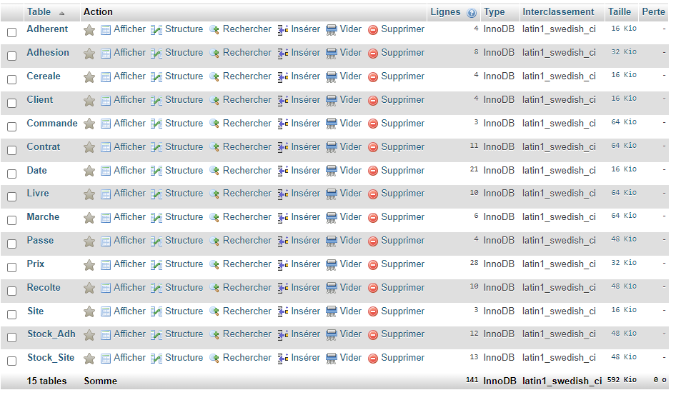

Le but de cette SAE était de répondre aux besoins d'un client en créant une base de données. Cette base de données était destiné à une coopérative agricole.
La coopérative se fait livrer des céréales par des adhérents, puis revend de gros stockages à des clients qui proposent des marchés. Notre but était de répondre à une série de questions qui correspondent aux attentes du client.
Ressenti d'un étudiant
C'était, selon moi, le projet le plus long et le plus compliqué. On a eu beaucoup de mal, car on est absolument parti de rien et c'était notre premier projet en BDD. A la fin du projet, je trouve que j'ai beaucoup appris et je me sens plus à l'aise au niveau de la réflexion pour faire une base de données. J'ai aussi plus de facilité pour faire les différents schémas.
Compétences acquises:
Mettre à jour et interroger une base de données relationnelle
En introduction BD, on a appris à construire une base de données relationnelle. On avais déjà quelques bases depuis le lycée mais seulement sur la partie SQL.
Démonstration vidéo du jeux.